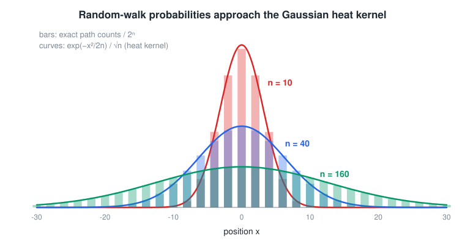
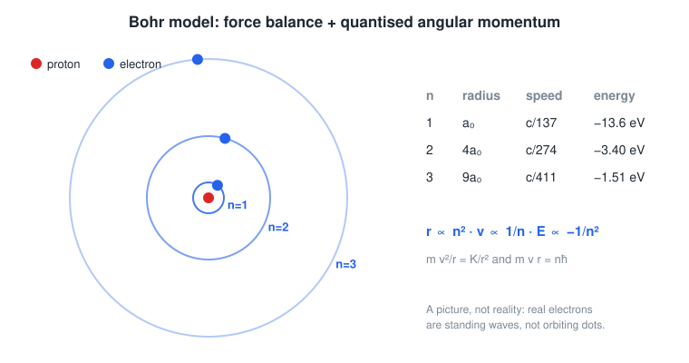
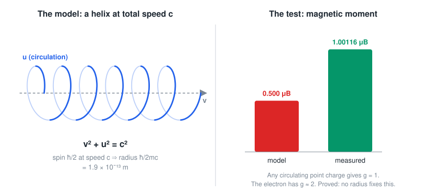
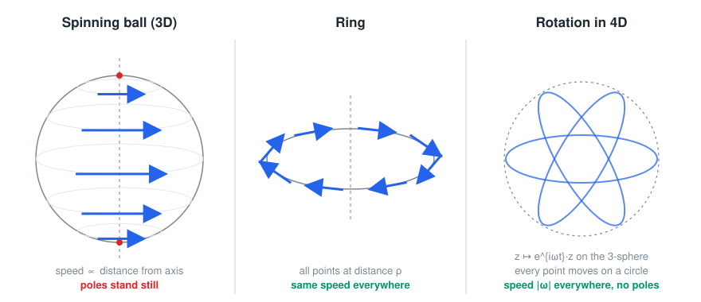
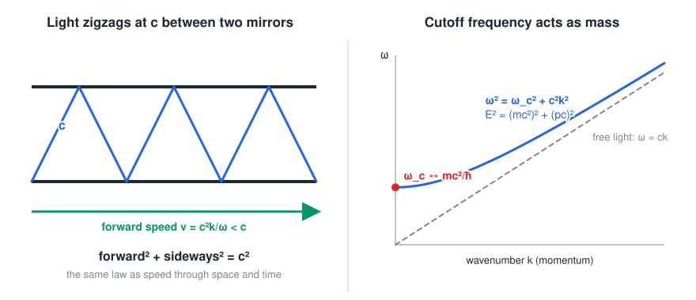

sorry
From collision course to diffusion
A sailor's rule of thumb, followed down to molecules, the heat equation and quantum mechanics, with every step machine-checked in Lean 4.
If another boat stays still in your windscreen while it grows larger, you are on a collision course.
Source and proofs: github.com/punnerud/movement-lean (folder Movement/).
1. Constant bearing, decreasing range
You (blue) sail straight up. Change the other vessel's course and speed. The dashed sight lines show the bearing over time. When they stay parallel, the boats meet.
In Lean, with relative position r(t) = r₀ + t·v:
| cbdr_collision | velocity pointing straight at you ⇒ same direction throughout, range shrinks, impact at t = 1/c |
| collision_implies_cbdr | impact ⇒ constant bearing and strictly decreasing range beforehand |
| no_collision_of_not_parallel | bearing drifts ⇒ never collide |
2. Billiard balls: equal masses exchange energy best
A ball hits another at rest head-on. The fraction of kinetic energy handed over is 4m₁m₂/(m₁+m₂)². Lean proves this is ≤ 1, with equality exactly when the masses are equal (Newton's cradle).
2b. Spinning molecules feel lighter
Real molecules can rotate. Hit one off-centre at lever arm b and part of the impulse spins it. Lean proves that the collision then behaves exactly like a head-on one against a lighter body with effective mass
M = m₂ I / (I + m₂ b²)
Energy transfer is maximal when m₁ = M, so it is the effective mass that has to match, not the real one.
2c. Collisions carry energy from hot to cold
One collision moves the energy k·(E₂ − E₁) plus a term that averages to zero when the velocities are uncorrelated (collision_energy_flow, energy_flows_hot_to_cold). So energy flows to the side with less of it, and nothing flows exactly when the mean energies are equal: that is what one temperature means. In a small simulation, balls of masses 1 and 4 that start with one speed each end with equal mean energies and Gaussian velocities; the difference shrinks by the proved factor 1 − 2k per round. Equal masses on a line never share: they swap their energies for ever. What is not proved is that the velocities stay uncorrelated.
3. Diffusion: collisions make spreading slow
Every collision randomises the direction. Model it as a ±1 step at each tick. Lean proves that after n steps the mean squared displacement is exactly n, so the cloud spreads like √n. Without collisions it would spread like n.
4. From the random walk to the heat equation
Count the paths instead of following one walker. To be at x after n+1 steps you must have been at x−1 or x+1. That one sentence is already a heat equation in disguise:
p(n+1,x) − p(n,x) = ½ · [ p(n,x+1) − 2p(n,x) + p(n,x−1) ]

| master_equation, discrete_heat | the path counts obey the discrete heat equation above |
| diffusive_scaling | with step h every τ seconds the diffusion coefficient is D = h²/2τ |
| second_difference_tendsto | the bracket divided by h² converges to the second derivative as h → 0 |
| heatKernel_solves | the Gaussian exp(−x²/4Dt)/√t solves ∂ₜu = D ∂ₓₓu |
5. From diffusion to quantum mechanics
Take the heat equation and make the diffusion coefficient imaginary, D = iħ/2m. The result is the Schrödinger equation for a free particle, iħ ∂ₜψ = −(ħ²/2m) ∂ₓₓψ. Lean proves both this and what the factor i changes: a heat wave decays, while a quantum wave keeps its size for ever and only rotates its phase.
| mode_solves | the wave exp(−ck²t)·exp(ikx) solves ∂ₜu = c ∂ₓₓu for any complex c |
| schrodinger_mode | for c = iħ/2m this is the Schrödinger equation |
| norm_heat_mode | heat: size = exp(−Dk²t), so sharp detail (large k) dies fastest |
| norm_schrodinger_mode | quantum: size = 1 at all times |
| heat_to_schrodinger | any heat solution continued to imaginary time solves Schrödinger (Wick rotation) |
6. Why electron orbits come in fixed sizes
Around a proton, the electric pull K/r² supplies exactly the centripetal force mv²/r. Classically that allows any radius, and closer just means faster. Bohr added one rule, angular momentum mvr = nħ, and only discrete orbits survive.

| orbit_speed | force balance alone: v² = K/(mr), every radius allowed |
| bohr_orbit | with quantisation: v = K/nħ, r = (nħ)²/mK, E = −mK²/2(nħ)² |
| bohr_speed_fraction | v = c·α/n with α ≈ 1/137: about 0.7 % of light speed in the ground state |
| ellipse_energy_and_momentum | ellipses instead of circles: the energy depends only on the length of the ellipse, E = −K/(rp + ra) |
| sommerfeld_orbit | quantise both the angular momentum (k) and the in-and-out motion (nᵣ): same energies as Bohr with n = nᵣ + k, shape 1 − ecc² = (k/n)², so each level holds one circle and n − 1 ellipses |
The Bohr model is a stepping stone. It gets hydrogen's energies right, but real electrons are standing waves (section 5), not dots on orbits.
7. Is spin a circulation at the speed of light?
This section tests an idea, not established physics. Lean checks that the algebra is right, not that electrons behave this way.
Suppose the electron's spin ħ/2 is the angular momentum of something going round, and that this circulation combines with the forward motion so the total speed is always c, like a helix.

| spinning_sphere_speed | a spinning ball of classical electron size would need a surface speed of about 171c: ruled out |
| zitter_radius | circulation at exactly c forces radius ħ/2mc = 1.9 × 10⁻¹³ m, the Zitterbewegung scale of the Dirac equation |
| helix_speed | v² + u² = c² gives u = c·√(1 − v²/c²), the time-dilation factor |
| classical_g_factor | any circulating point charge has μ = (e/2m)·L, so spin ħ/2 gives half a Bohr magneton |
| no_orbit_gives_both | no-go: no radius and no speed give both the measured spin and the measured magnetic moment |
Checked against measurements:
| Quantity | Model | Measured | |
|---|---|---|---|
| Slow-down when moving | √(1 − v²/c²) | time dilation | matches |
| Circulation radius | 1.9 × 10⁻¹³ m | Compton-scale smearing (Darwin term) | right scale |
| Magnetic moment | 0.500 μB | 1.00116 μB | factor 2 off |
| Size in collisions | ~10⁻¹³ m | point-like below ~10⁻¹⁸ m | far too large |
| Rotation by 360° | back to start | spin-½ needs 720° | not reproducible |
So a point on a helix cannot be the whole story, and the factor 2 is a theorem rather than a tuning problem. What survives is weaker: spin as a circulation at the Compton scale of the wave field, which reproduces both the spin and g = 2 inside standard Dirac theory (Ohanian, 1986).
8. Can every part of a spinning thing move at the same speed?
Section 7 wanted everything to move at c. A spinning ball cannot do that, because its poles stand still. Two other geometries can: a ring, and a rotation in four dimensions.

| rigid_rotation_has_pole | any rigid rotation in 3D leaves a point of the sphere at rest |
| ring_speed | on a ring every point has the same speed |ω|ρ |
| isoclinic_speed | in 4D the rotation z ↦ e^{iωt}z moves every point of the unit 3-sphere at speed |ω| |
| spinor_full_turn, spinor_double_turn | a spin-½ state gets the phase e^{iθ/2}: 360° gives −1, and only 720° gives +1 |
The 3-sphere is where spin-½ states live, which is why the 720° rule shows up here. The mathematics is standard. Reading it as literal motion of the electron is still an interpretation.
9. Waveguides and spacetime: slower than c, yet always c
Sections 7 and 8 explored "the total speed is always c" as an interpretation. Here are two places where it is established physics. Light between two mirrors zigzags at c and so advances more slowly. Raise the frequency and the zigzag flattens.

| waveguide_zigzag | forward speed and sideways speed combine to exactly c |
| group_lt_c, phase_gt_c | a pulse goes slower than c; the crests go faster but carry no signal |
| waveguide_mass | the dispersion relation is E² = (mc²)² + (pc)² with m = ħω_c/c²: the cutoff acts as mass |
| spacetime_speed | speed through space and speed through time combine to c |
| energy_momentum | E = γmc² and p = γmv give the same relation for a real particle |
A massive particle and light trapped in a waveguide therefore obey the same equations. Light slowed in glass is a different effect, caused by interference with waves re-radiated by the material's electrons.
10. Testing the formulas on real atoms and molecules
Lean proves that a formula follows from a model. It cannot say whether the model matches nature. The analyzer does that part: it evaluates the proved formulas, and numerical quantum mechanics for several electrons, and compares the results with reference data. Open the full table of 165 comparisons →
Simple models
| What | Typical error | |
|---|---|---|
| Ionization energy of one-electron ions, H to C⁵⁺ | 0.001 % to 0.04 % | matches |
| Balmer lines of hydrogen | 0.001 % | matches |
| Rotation of D₂, HD and DCl predicted from the lighter isotope | 0.005 % to 0.02 % | matches |
| Heat capacity of He, Ar, H₂, N₂, O₂, CO; speed of sound in air and helium | below 1 % | matches |
| Helium ground state with one screening parameter | 1.9 % | roughly |
| Lithium's outer electron outside a fixed inner pair: as a cloud; kept orthogonal to it; with exchange | 12 %, 5.4 %, 0.8 % | matches |
| Heat capacity of Cl₂ from a sum over its measured levels; for the natural isotope mixture | 0.11 %, 0.01 % | matches |
| Helium as two independent electrons; lithium's outer electron | 37 % to 468 % | fails, on the proved side; fixed below (0.002 % and 0.09 %) |
| Heat capacity of Cl₂ and CO₂ | 14 % to 22 % | fails, on the proved side; with quantised vibration 0.5 % and 0.05 % |
The failures fail in a proved direction. The simple models cannot give the measured number, but Lean proves on which side of it they must land. Helium without repulsion is a lower bound (repulsion_raises_energy) and the screened model an upper one: −108.8 to −77.5 eV, measured −79.0. Lithium's outer electron feels a charge between 1 and 3, so its energy lies between the two Bohr values (screening_bracket): 3.40 to 30.6 eV, measured 5.39. A quantised vibration holds between nothing and its classical share (quantum_vibration_below_equipartition, gamma_vibration_bracket), so the heat capacity of Cl₂ lies between 3.5 R and 4.5 R (measured 4.08 R). The collision theorems of section 2 cannot close this last gap: they give every motion an equal share, which is exactly the model that fails. The quantum of vibration is what stops the sharing, and it enters as an assumption.
Numerical quantum mechanics for several electrons
Where the simple models fail, the analyzer solves the Schrödinger equation numerically. Lean proves the principle that makes this safe (rayleigh_ritz_bound): any trial state has an energy at or above the true one, so a better trial state can only move the answer down towards the truth.
| System | Method | Error |
|---|---|---|
| Helium, total energy | each electron in the average field of the other (Hartree–Fock) | 1.45 % |
| Helium, total energy | electron–electron distance in the wavefunction (Hylleraas) | 0.002 % |
| Lithium, ionization energy | Hartree–Fock | 0.9 % |
| Lithium, ionization energy | full configuration interaction, s, p and d orbitals | 0.09 % |
| Beryllium, ionization energy | Hartree–Fock | 14 %, fails |
| Beryllium, ionization energy | full configuration interaction, s, p, d and f orbitals (1 071 225 determinants) | 0.15 % |
| H⁻, binding of the second electron | Hartree–Fock | not bound, fails |
| H⁻, binding of the second electron | Hylleraas | 0.07 % |
| H₂ bond length, vibration, rotation | full configuration interaction | 0.04 % to 0.12 % |
| H₂ binding energy | full configuration interaction | 1.1 % |
H⁻ is a proton with two electrons. In the average field of the other electron, the second electron is not bound at all. The ion exists only because the two electrons actively stay away from each other.
The H₂ rows use no measured property of the molecule. Only the masses and charges of the electron and proton go in.
Two kinds of bond

Shared electrons (H₂). Pulling the nuclei apart costs energy only over a short distance. Then the curve levels off, because each electron goes back to its own atom. If both electrons are forced to stay in one shared orbital, the energy keeps rising and ends 6 eV too high.
Equal spins. The bond exists only when the two spins are opposite. With equal spins the electrons can never be at the same point, so they cannot gather between the nuclei, and the atoms repel at every distance: 10.6 eV higher than the bonded state at the bond length. This is electric energy steered by spin, not a magnetic force.
Transferred electron (NaCl). Two opposite charges attract as −e²/r, much like the plates of a charged capacitor, except that the force weakens with distance. Point charges alone miss the binding energy by 7.5 % and the dipole moment by 26 %. Adding repulsion between the electron clouds and polarization of the ions brings these to 3.9 % and 13 %. The measured binding energy is itself only known to about 2 %. At about 9.4 Å it becomes cheaper for the electron to jump back, leaving two neutral atoms.
Solving in steps: the route-planner idea
Full CI counts every way of placing the electrons in the orbitals. For chlorine's eight outer electrons that is 23 million arrangements in 20 orbitals and about 18 billion in 44, most of which contribute almost nothing. quantum.iterative_ci does not compute them all. It solves the problem in a small set, ranks the arrangements just outside that set by how strongly the current answer couples to them, adds the best ones, and solves again starting from the previous answer. Every step gives an upper bound on the energy, the bounds only go down, and if everything is eventually added the result is exactly full CI (checked in the code against the direct full-CI solver).
The idea is borrowed from route planning. In the MPEE routing engine, the matrix broker never fills in the whole N × N travel-time table: it obtains the thin skeleton of cells the optimizer actually reads, derives the rest, and reuses what it already knows on the next solve. Its gateway index rests on the fact that traffic between two regions passes through a few roads. The same two observations hold for electrons:
| Route planning (MPEE) | Electrons (here) |
|---|---|
| Buy only the cells of the N × N matrix that the solver reads | Keep only the electron arrangements that carry weight |
| Rank candidate cells by a cheap prior before paying for them | Rank candidate arrangements by their coupling to the current answer |
| A warm cache makes the next solve start from what is known | Each solve starts from the previous wavefunction |
| A few gateways connect regions | A few orbitals connect a filled shell to the empty ones |
| Minimize travel time | Minimize energy |
In quantum chemistry this family of methods is known as selected configuration interaction; the code here is a simple member of it that selects whole strings (the arrangement of the electrons of one spin) and not single determinants.
Three more steps follow the same pattern:
- Refine where it matters. At full size, the strings that turned out to carry the least weight are exchanged for outside strings estimated to carry more, and an exchange is kept only if the energy went down. This is how a finite-element mesh is refined where the flow is turbulent. On the 20-orbital test it gains little (0.05 millihartree of the 0.41 that separate the selection from full CI), which says the ranking during growth was already good.
- Store a base and a residual. The state is saved after every step, so a later run continues where the last one ended, also with a larger selection. Single and double excitations are stored as they are; for higher excitations only the difference from what the singles and doubles predict is stored. That prediction is the coupled-cluster idea: two pairs of electrons that avoid each other independently. It accounts for 98 % of the weight of the quadruple excitations in Cl⁻, but for little of the triples and quintuples. Coefficients are written as a sign and a logarithmic magnitude, and the smallest are dropped. For 1.4 million determinants the file is 0.28 MB against 11.5 MB of raw numbers.
- Lossy storage is safe here. The file is only a starting point. The solver re-converges from it and regenerates what was dropped, so the loss costs iterations and never correctness. This is the role the exact base plays in MPEE's matrix codec, with the difference that there the residual restores the data bit for bit and here the solver does.
Measured on chlorine with 20 orbitals, where full CI is available: 1.4 of 23 million determinants give the electron affinity to 0.005 eV, in about one minute against seven for full CI.
A mesh that is fine only where it needs to be. The steps above work on a grid: every chosen spin-up arrangement paired with every chosen spin-down arrangement. Most of that grid is empty: of 25 million grid points for chlorine in 44 orbitals, 1.7 million carry a coefficient above the storage threshold. mesh_ci.py drops the grid. Any determinant can be in the list on its own, so an important spin-up arrangement can have thousands of partners and an unimportant one a handful. It starts from a single determinant and repeats: solve, rank the determinants outside the list by the energy each would bring, (Σ H c)² / (E − H), add the best, solve again from the previous answer. For Cl⁻ in 20 orbitals, 91 thousand determinants reach about the accuracy of the 1.44 million of the grid, and 1.5 million come within 6 microhartree of full CI (23 million). The sum of the estimated contributions of everything left out is reported next to each energy; it is an estimate from second-order perturbation theory, not a bound. The list can also be improved at fixed size (refine in mesh_ci): the determinants that carry least, c² (H − E) each, are exchanged for better ones from outside. On Cl⁻ in 20 orbitals this lowers the error by 7 to 8 % (2.87 → 2.66 millihartree at 20 thousand determinants, 0.78 → 0.72 at 80 thousand) and doubles the time, and a second round finds almost nothing: growing by the same ranking already leaves little to exchange. It is off by default. The orbitals themselves can be learned from a small run (natural_orbitals in mesh_ci.py): a pilot list is solved, the one-particle density matrix of its wavefunction is diagonalised, and the orbitals are rotated to its eigenvectors. With orbitals from a pilot of 5 thousand determinants (0.3 s), the error on Cl⁻ in 20 orbitals falls by a factor of about 3: 0.89 → 0.33 millihartree at 20 thousand determinants and 0.112 → 0.035 at 80 thousand. A larger pilot or a second round adds almost nothing.
The list is a table with a composite key (spin-up string, spin-down string) and two sorted indexes over it, and applying the Hamiltonian is a self-join on "at most two electrons moved". The inner loops are in Rust (analyzer/cikernel, called from Python through ctypes). The kernel does not follow a fixed plan: one measuring pass records, for every determinant, the work it took to find its partners and how many were found, and the partner lists are then remembered where that pays most, within a memory budget. On a test problem this made each application of the Hamiltonian 7 times faster with identical results. The same choice between scanning a short list and looking up generated neighbours in a long one is made per row.
The formula for what is left out. With the list's solution c and energy E, each outside determinant j contributes about (Σi Hji ci)² / (E − Hjj), and the rest is the sum over j. Lean proves the idealised case (second_order_estimate_brackets): when the outside states are not coupled to each other, the true lowest energy lies between the list's energy and the list's energy plus this sum. Leaving states out gives too high an energy, and the estimate over-corrects. Real outside determinants are coupled to each other, so for the calculation the sum is an estimate and not a lower bound. The sum also depends on how weak a coupling is still counted: cl_rest.py reloads a stored state and repeats the sum for a falling threshold (10⁻⁴ down to 10⁻⁶), in partitions so memory stays bounded, until it stops changing. On a test with 800 of about 11 thousand determinants the error fell from 0.35 to 0.02 millihartree when the estimate was added. For the 44-orbital chlorine lists the sum needed a threshold of 10⁻⁷ to level off: −0.59 millihartree for Cl⁻ (216 million outside determinants) and −0.09 for Cl, which moves the electron affinity from 3.484 to 3.497 eV. The last step, from 3·10⁻⁷ to 10⁻⁷, changed it by 0.0003 eV. An earlier pair of lists of the same size, built on a poorer choice of orbitals (see below), gave 3.464 eV with a rest three times as large, and 3.496 eV with it: two different lists, the same answer once the rest is added. What remains to the measured 3.613 eV is then mostly outside this calculation: the orbital set and the frozen inner electrons.
Which mixture of equal-energy orbitals. The three p orbitals of a shell have the same energy, and a diagonalisation returns an arbitrary mixture of them; likewise the five d orbitals. For full CI the mixture does not matter. For a selected list it matters a great deal. \1 fixes the mixture by a rule that depends only on the orbitals (pivoted QR of their coefficients), which makes the orbitals of a shell as different from each other as they can be. On Cl⁻ in 20 orbitals the error of the mesh then falls from 2.87 to 0.89 millihartree at 20 thousand determinants and from 0.78 to 0.112 at 80 thousand, a factor of three to seven for no extra work. The 44-orbital figures use this rule; the exchange test above was measured before it and would start from a smaller error with it. The rule also makes orbitals change smoothly when the basis changes, which a stored list needs: with \1, a problem not solved before starts from the list of the most similar one in the content store. With the d exponents of chlorine moved by 5, 25 and 50 %, the old list solved in the new integrals lies 0.6, 41 and 140 microhartree above a freshly grown list of the same size (40 thousand), and after one round of exchange 32 microhartree below it. Without the rule the old list was useless (3.9 millihartree above). At this size growing the list is cheap, so the time saved is not yet measured.
A store addressed by content. content_cache.py keys every stored result by a hash of what it depends on. Two-electron integrals are keyed by the basis itself (exponents, positions, contraction), and a list of determinants by the integrals it was grown in, so the same question finds its answer again whatever the run was called, and a changed basis can never pick up an old list. Lists in this store use a compact form built on the idea of a transform that keeps what it loses (rRETL in mpedb): the coefficients of each block of the list are predicted from the blocks before it, c = (Σ H c) / (E − H), and only what the prediction misses is stored. The prediction correlates 0.996 with the true coefficients, so the remainder is eleven times smaller and three quarters of it falls under the storage threshold. With the strings sorted inside each block and stored as differences, a list of 80 thousand determinants goes from 6.85 to 2.69 bytes per determinant. Reading it back costs four applications of the Hamiltonian, so a restart is slower (7 s against 1.6 s on that list) and gives the same energy.
Larger runs, and what they cost. The 44-orbital chlorine run (Cl⁻ −459.791578, Cl −459.663563 with 2 million determinants each, 3.48 eV) is with the orbital rule; before it the same list size gave −459.790452 and −459.663146, 3.46 eV. The whole NaCl molecule (molecule_ci.py nacl: the inner electrons frozen, 8 outer electrons in 64 orbitals, 1 million determinants, the atoms computed in the molecule's basis) binds by 3.99 eV against 4.25 measured (−6.2 %). N₂ the same way (10 electrons in 68 orbitals, which needs the 128-bit strings) binds by 8.78 eV; the reference is 9.90 eV (measured dissociation energy 9.754 to 9.759 eV plus the zero-point energy 0.146 eV), but this is not a comparison in the analyzer. Neither list is converged. Releasing the 2s and 2p electrons of chlorine (16 electrons in 60 orbitals) gave 3.28 eV against 3.35 with them frozen, but with half the determinants and about 5 millihartree left outside the list, so it says nothing yet about the core. One more function of each kind (diffuse s and p, tight d and f: 60 orbitals, 2 million determinants) lowers Cl⁻ by 4.2 and Cl by 4.1 millihartree, so the affinity hardly moves: 3.486 eV from the lists and 3.502 with the rest at threshold 10⁻⁶, against 3.484 and 3.495 for 44 orbitals. The remaining 3 % to the measured value is therefore not a matter of a few more s, p, d and f functions of this kind; what the calculation still leaves out is higher angular momentum (g functions and beyond), the frozen inner electrons and relativity. The code now has g functions, built like the others from s-Gaussians: the nine harmonic polynomials of degree four applied as fourth differences on a small grid (g_functions; in cl_affinity.py the g exponents follow a slash in the f argument). Projected on spherical harmonics they are at least 98 % l = 4, the rest l = 6 and 8. In a small test (one d, one f and one g exponent, 100 thousand determinants) the g shell lowers Cl⁻ by 11.5 and Cl by 8.5 millihartree and raises the affinity from 3.18 to 3.27 eV. Unlike the extra s, p, d and f functions, it favours the ion; how much of that survives in the large set is not measured yet. Against PySCF 2.15 on Cl⁻ in 20 orbitals (23 million determinants, two threads): PySCF 109 s and 4.9 GB; the full CI here 365 s and 3.9 GB, the same energy to eight decimals; the mesh with 1.5 million determinants 469 s and 9.2 GB, 6.5 microhartree above. PySCF is three to four times faster. Most of the mesh's memory in that measurement was a fault: the mesh object held a reference to itself, so the index and plan of every earlier growth step stayed alive until Python's cycle collector happened to run. A log of memory per phase (CI_MEMORY_LOG=1) showed a run starting at 6 GB with a single determinant, left over from the species before. With the fault removed, three runs in a row peak at 0.61 GB each instead of 0.64, 0.88 and 1.23 GB. At full size (the 1.5 million determinants above, with the orbital rule) the peak is now 5.4 GB instead of 9.2 and the energy −459.71815031, 0.05 microhartree above full CI instead of 6.5. The second-order estimate for the 44-orbital lists with the new orbitals is a third of what it was (Cl⁻ at threshold 10⁻⁷, where it levels off: 0.59 millihartree against 1.67), and the affinity with it is 3.497 eV against 3.496 before: the better orbitals moved into the list what the estimate used to supply. Optimising two d exponents of chlorine by the analytic gradient (full CI, 20 orbitals, ten evaluations) took them from 0.2 and 0.7 to 0.316 and 1.030 and lowered Cl⁻ by 4.1 and Cl by 6.0 millihartree, so the electron affinity fell from 3.162 to 3.108 eV. Minimising the ion alone does not change this. With one d exponent (15 orbitals, start 0.4, affinity 3.115 eV) the optimum is 0.575 for the ion, 0.598 for the sum and 0.620 for the atom, with affinities 2.973, 2.958 and 2.945 eV: the objective moves the result by 0.03 eV, the optimisation itself by 0.15. Both energies are upper bounds and both fall, the atom's by more, so the higher affinity at the hand-picked exponent came from describing the atom worse, not the ion better. In a set this small an affinity near the measured one is partly an imbalance; closing the gap takes more functions, not better-placed ones.
Exponents from derivatives instead of by hand. The exponents of the correlating functions were chosen by hand. exponent_gradient.py computes the derivative of the CI energy with respect to them from the functions themselves: forward-mode automatic differentiation (dual numbers, the mechanism of PyTorch's jvp) through the Gaussian integrals, orbitals that follow the moving functions, and no derivative of the CI vector, since it sits at a minimum. For Cl⁻ with one d shell the result, −51.801166 mEh per unit of ln(exponent), agrees with central differences of the whole calculation (−51.801123). optimize_exponents.py follows these derivatives to the minimum of E(Cl⁻) + E(Cl). With a single d shell it moves the exponent from 0.40 to 0.598 in five evaluations and lowers the two energies by 10 and 16 mEh, but the electron affinity gets worse, 3.12 → 2.96 eV: the neutral atom gains more from a tight d function than the ion does, and one shell cannot serve both. A lower total energy is not a better energy difference; the difference needs a tight and a diffuse shell.
Vibrations, solids and transport
Lean now proves the zero-point energy of the oscillator (oscillator_ground_state) and that isotopes vibrate as one over the square root of the reduced mass; D₂ and HD follow from H₂ to 0.07 % and 0.03 %. Copper has the classical heat capacity 3R to 1.9 %; diamond has a quarter of it, inside the proved bracket. The first test of what collisions carry fails for the simple picture: heat conduction over viscosity is 2.5 times the mean-free-path value for all five noble gases (the full kinetic theory gives 5/2, matching to half a percent, and is not derived here).
Magnetism: the electron cloud as a tiny superconductor
A magnetic field sets the whole electron cloud circulating, and the induced current opposes the field without resistance, as in a superconductor. An atom is about a hundred times thinner than the layer a superconductor needs to expel a field, so only a fraction of order (v/c)² is shielded: 17.7 millionths at the nucleus of hydrogen (formula α²/3, 0.08 % from the reference) and 60 millionths in helium (0.05 % with the Hylleraas wavefunction).
Helium's diamagnetic susceptibility, computed from the same wavefunction, agrees with the best published calculation to better than 0.001 % but lies 6.4 % from the only gas-phase measurement, made in 1960. Here the measurement is the likely weak link.
NaCl with nothing borrowed. The ionic model above takes the bond length and vibration frequency from measurement. A Hartree–Fock calculation for all 28 electrons needs only the nuclear charges. It gives the bond length to 1.6 %, the vibration frequency to 3.2 %, the dipole moment to 7 % and the energy to pull the molecule apart into ions to 4.2 %. The binding energy to neutral atoms fails (−29 %) for one identifiable reason: Hartree–Fock cannot hold the extra electron on chlorine (2.44 eV against a measured 3.61 eV). Treating chlorine's outer electrons by full CI raises that to 3.16 eV and the binding energy to −12 %. A second d shell changed that by only 0.003 eV, so what remains lies elsewhere: with f functions and more s, p and d functions (44 orbitals, where full CI would need about 18 billion determinants) the determinant mesh described above reaches 3.48 eV with 2 million of them, and the binding energy comes to −4.4 % with nothing measured. Each energy is an upper bound, the difference is not, and the value was still rising slowly with the size of the list.
Forces between neutral atoms
Two neutral helium atoms still attract. Each electron cloud fluctuates, the momentary lopsidedness polarises the other atom, and the two induced dipoles pull on each other with an energy −C₆/r⁶. Fluctuations of more complicated shape add the shorter-ranged terms −C₈/r⁸ and −C₁₀/r¹⁰. From calculations of the excited states of one helium atom the analyzer gets how easily the atom is distorted (0.05 % from the measured value) and the three strengths (0.1 % to 0.4 % from the benchmarks).
The whole curve. Hartree–Fock for the pair gives only the repulsion of the overlapping clouds: it has no fluctuations, so in Hartree–Fock two helium atoms repel at every distance. Adding the three attraction terms, each switched off smoothly where the clouds overlap, gives the full curve. Nothing is fitted to the reference.

| Quantity | Model | Error |
|---|---|---|
| Well depth (10.996 K) | Hartree–Fock + C₆ term | −42 %, fails |
| Well depth | Hartree–Fock + C₆, C₈, C₁₀ terms | +2.4 % |
| Well depth | full-CI repulsion + C₆ to C₁₆ terms | −3.3 % |
| Well depth, best curve | full-CI repulsion + directly computed attraction | +1.4 % |
| Minimum position, zero crossing, wall at 2.1 Å | best curve | −0.03 %, −0.07 %, −0.2 % |
| Second virial coefficient, 0 °C (measured) | best curve | −0.23 % |
| Position of the minimum (2.97 Å) | same | −0.6 % |
| Energy from 3.2 to 6.4 Å | same | within 0.5 % |
| Energy on the wall at 2.1 Å | same | −6.2 % |
| Second virial coefficient of helium gas, 0 °C | curve + quantum correction | −2.2 % (measured) |
| Binding energy of the He₂ molecule | lowest level in the curve | 450 neV against a measured 152 neV, fails |
The well is a small difference of large terms: 9 K of repulsion against 20 K of attraction. The first model's 2.4 % is partly a cancellation: Hartree–Fock lacks some repulsion, and the damped series lacks some attraction. The best curve replaces both. The repulsion comes from a four-electron full CI for the pair, and the attraction is computed directly, summing over every excited state of both atoms with no series and no damping function. That attraction is 22.35 K at the minimum against a published 22.40 K. The resulting curve is within 0.3 % at the wall, the zero crossing, the minimum position and the measured virial coefficient; the well is 1.4 % too deep because the full-CI repulsion is still slightly short. The helium molecule is the hardest test. It exists, and the curve binds it, but its binding energy is about 1/6000 of the well depth, so a 1.4 % error in the well still doubles it (287 neV against a measured 152 neV). At its strongest the attraction corresponds to 11 K, five thousand times weaker than the bond in H₂, which is why helium only liquefies at 4 K.
The Schrödinger equation as diffusion with reaction
Sections 4 and 5 say that the Schrödinger equation in imaginary time is a heat equation. With a potential it becomes diffusion with reaction: walkers diffuse, and multiply or die at a rate set by the potential. Lean proves that the population is steady exactly when a shift in that rate equals the energy (steady_iff_shift_eq_energy), so the energy is read off as the shift that keeps the number of walkers constant. There are no basis functions. A guess for the wavefunction steers the walkers; for two electrons the answer does not depend on it, for three or more the result is an upper bound that depends on where the guess is zero. The engine is written from first principles; established codes of this kind exist and are far more developed.
| System | Walkers | Reference | Difference |
|---|---|---|---|
| H | −0.50006(27) Eh | −0.5 (exact) | −0.06 mEh |
| He | −2.90263(69) | −2.903724 | +1.10 mEh |
| H₂ | −1.17368(44) | −1.174476 | +0.80 mEh |
| H₃⁺ | −1.34422(74) | −1.343836 | −0.38 mEh |
| HeH⁺ | −2.97747(107) | −2.978708 | +1.24 mEh |
| H₃ at the saddle of H + H₂ | −1.65226(114) | −1.659162 | +6.90 mEh |
| Barrier of H + H₂ → H₂ + H | 21.5(1.3) mEh | 15.3 | +6.2 mEh |
| Positronium (nothing held fixed) | −0.24982(19) | −0.25 (exact) | +0.07 % |
| Muonic hydrogen | −92.886(46) | −92.920 (exact) | +0.04 % |
| Positronium ion (e⁻ e⁻ e⁺) | −0.26031(75) | −0.262005 | +0.65 % |
| Charm quark and antiquark, 1S and 1P | 0.2576(1), 0.6860(2) GeV | radial grid | 0.0, +0.1 MeV |
The references are checked against published values (H₃⁺, HeH⁺, the barrier of H + H₂ and the positronium ion); the charmonium masses are Particle Data Group values from a secondary table. The two-electron results are right to about one error bar. H₃ has three electrons and comes out 7 mEh too high, because the zero surfaces of its simple guess are not the true ones, and the reaction barrier inherits that error. The same loop handles particles of any mass, and a constant pull between a quark and an antiquark; for charmonium it agrees with a direct solution of the same model, whose 1P − 1S splitting (428 MeV) is itself 6 % below the measured 457 MeV.
Improving the guess. For the exact wavefunction (H g)/g equals the energy at every point, so its spread over sample points measures how wrong the guess is and can be minimised without knowing the answer. A richer guess (eight added terms in the electron–nucleus and electron–electron distances) cuts the noise of a short H₂ run from 3.7 to 0.8 mEh and of helium from 1.1 to 0.4 mEh. The parameters are found by an iterated search after the route optimiser in MPEE (many cheap moves, late acceptance, kicks, several starts). It is more robust than the simplex method, which failed on helium, and slightly behind it where the simplex works; the search followed by a simplex polish is best or close to best. For H₃ the added terms do not move the zero surfaces, so that error remains.
Long runs with improved guesses. Run again with guesses improved from samples, the statistical errors fall by a factor of five to fourteen: He −2.90370(5), H₂ −1.17418(10), H₃⁺ −1.34390(10), HeH⁺ −2.97808(21), H₃ −1.65844(23), and the barrier of H + H₂ becomes 15.74(25) mEh against 15.31. A second calculation of our own (full CI, an upper bound) lies above the walkers for every species, as it must. With the noise gone, H₂, HeH⁺ and H₃ sit about three error bars above the published values, by 0.3 to 0.7 mEh; the likely cause is the straight-line extrapolation in the time step, not yet examined. The honest accuracy is about half a millihartree.
The bias found and removed. A study of the time step traced those 0.3 to 0.7 mEh to a limit the engine put on the reaction rate. Without it all six species agree with the published values within one error bar: H₂ −1.17451(9), HeH⁺ −2.97861(22), H₃ −1.65901(28). The limit has been taken out.
When the nuclei are not slow. With a muon in place of the electron the nuclei are only 9 to 27 times heavier than the light particle. The usual picture (nuclei at rest, then vibration) is good to 0.2 % of the binding energy for H₂⁺ and wrong by the whole binding energy for ppμ. Walkers with all three particles free agree with the published energies within their errors, though the errors are large: 244 ± 8 eV against 253.2 eV for the binding energy of ppμ.
Richer orbitals move the zero surfaces. With a second exponent and a p function on each atom of H₃, the walkers give −1.65830(54) Eh, 0.9 mEh above the reference, where the simple orbitals gave −1.65401(97), 5.2 mEh above. The barrier of H + H₂ → H₂ + H then comes out at 15.4 ± 0.8 mEh against a reference of 15.3 (the simple guess gave 21.5).
Are the deviations measurement errors?
With the one exception above, no. Each deviation of a simple model is far larger than the uncertainty of the reference value, and each closes when the matching piece of known physics is added:
| Quantity | Simple model | Corrected | What was missing |
|---|---|---|---|
| Ionization energy, H to C⁵⁺ | 0.001 % to 0.04 % | at most 0.00005 % | relativity, then the Lamb shift |
| CO rotational line | 0.46 % | 0.0001 % | the bond vibrates and stretches |
| Heat capacity of H₂ | 0.92 % | 0.01 % | quantised rotation |
| Heat capacity of Cl₂ and CO₂ | 14 %, 22 % | 0.5 %, 0.05 % | quantised vibration |
| Speed of sound in helium | 0.05 % | 0.0001 % | atoms repel slightly (real gas) |
Two caveats about the reference data: the tabulated ionization energies of one-electron ions are themselves QED calculations rather than direct measurements, and the tabulated heat capacities are computed from measured spectra. Each comparison declares in advance whether it should match, and the build fails if that changes.
11. Forces between atoms: what can be proved
The bonds and the helium–helium curve above are computed numerically. A number from a computer run is not a theorem, but the principles behind it are. Lean proves these:
- Two electrons with equal spin are never at the same point, which is why H₂ with equal spins has no bond.
- Mixing in an excited state always lowers the energy, so the attraction between two neutral atoms (dispersion) can never be a repulsion.
- The algebra behind the Casimir–Polder formula for C₆, and London's formula as its one-state special case.
- The damping factor used for the attraction terms stays between 0 and 1.
- For the ionic bond: where ions and neutral atoms have equal energy, the depth of the well, and the two mutually induced dipoles.
- A quantised vibration holds at most the classical share of heat capacity.
What stays outside Lean: the integrals, the matrix diagonalisations, the QED formula for the Lamb shift, and every measured value. Those are tested against reference data, not proved.
12. Real eigenvalues, and the zeros of the zeta function
Every energy in section 10 is an eigenvalue of a self-adjoint operator, and Lean proves that such eigenvalues are real (symmetric_eigenvalue_real). The same lemma is the easy half of an old idea of Hilbert and Pólya about the Riemann hypothesis: if the zeros of the zeta function are 1/2 + iE with E the eigenvalues of a self-adjoint operator, they all lie on one line (zero_on_line_of_symmetric). The hard half is the operator, which nobody has found.
At small scale one can ask whether the zeros look like eigenvalues. Computed here from the defining sum, 4520 zeros lie on the line below height 5000, and a separate count over the whole strip finds no others. The ratio of neighbouring gaps averages 0.6165 ± 0.0033 for the zeros, 0.6029 ± 0.0017 for complex Hermitian matrices, 0.5271 for real symmetric ones and 0.3853 for independent points. The zeros repel like eigenvalues of an operator without time-reversal symmetry, unlike the Hamiltonians of molecules; the match is close but not exact at this height (3.7 error bars). This is a numerical observation, not evidence of a proof.
Where this leads: Boltzmann and Navier–Stokes
The pieces above are textbook physics. The bridge between them is the deep part: showing that deterministic hard-sphere collisions really produce random-walk behaviour, and that it averages out to fluid equations.
| Scale | Description | Status |
|---|---|---|
| Particles | Newton's laws plus elastic collisions (sections 1–2b) | proved here |
| Random walk → heat equation | Master equation, continuum limit of the operator, Gaussian kernel (section 4) | proved here |
| Heat → Schrödinger | Imaginary diffusion coefficient (section 5) | proved here (free particle) |
| Kinetic | Boltzmann equation: the statistics of many collisions | Lanford (1975), short times only |
| Fluid | Navier–Stokes: viscosity is momentum diffusing through collisions, ν ≈ ⅓·v·λ, the same shape as D | Derived rigorously from hard spheres by Deng, Hani & Ma (2025), part of Hilbert's sixth problem; not formalised in Lean |
| Regularity | Do smooth 3D Navier–Stokes solutions exist for all time? | open Millennium Prize problem, untouched by this work |
Two of the results here have direct fluid-level counterparts:
- Rotation → bulk viscosity. In polyatomic gases, energy moves between translation and rotation with a delay (the
rot_sharetheorem quantifies one collision). That lag produces bulk viscosity, which vanishes for monatomic gases (Stokes' hypothesis) but not for gases like CO₂. - Mass mismatch → slow thermal equilibration. Because
4m₁m₂/(m₁+m₂)² ≈ 4mₑ/mᵢis tiny for electrons and ions, a plasma can sustain two different temperatures for a long time.